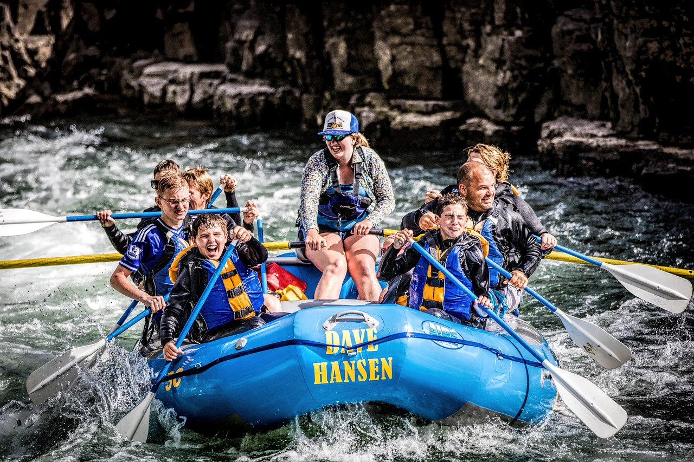
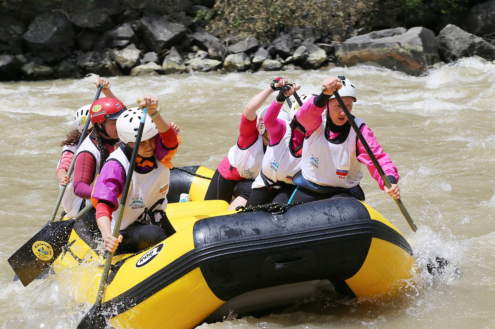
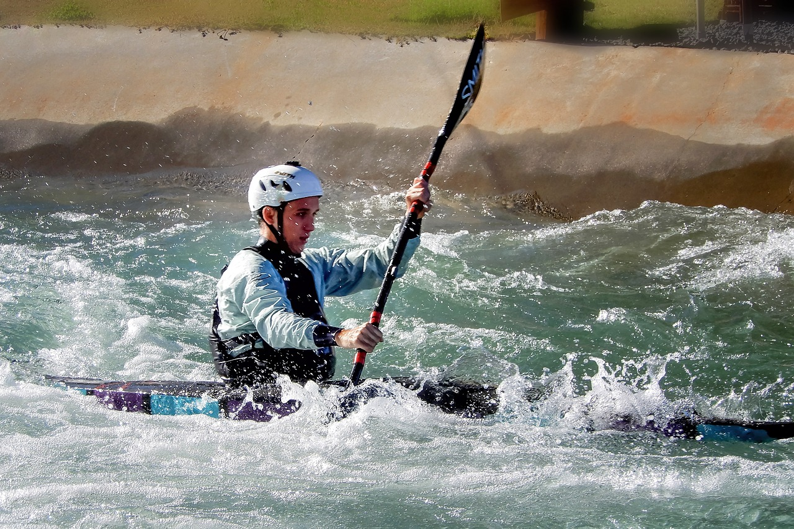

White Water Rafting Adventures
Happy Client

Your trusted partner for thrilling white water rafting experiences. With over two decades of experience, we've been guiding adventurers through some of the world's most challenging and breathtaking rapids. Our team of expert guides is dedicated to ensuring your safety and making every trip a memorable one. Whether you're a seasoned rafter or a first-timer, we offer a range of trips to suit all levels of experience. Join us on an unforgettable journey where you'll discover the true essence of nature's power and beauty. Come, be a part of the adventure of a lifetime!
History
Founded in 1995 by a group of adventure enthusiasts, the rafting company traces its origins to the majestic mountains of the western United States. Starting as a small local operator, it quickly grew into an industry leader. Over the years, our company has guided countless adventurers on thrilling journeys through the wildest river rapids. Our commitment to safety, fun, and respect for nature has earned the trust of our customers. Today, we remain dedicated to excitement and exploration, offering unforgettable experiences in some of the world's most stunning environments.
Adventure Awaits You!

Colorado River (Colorado, Arizona)

Arkansas River (Colorado, Arkansas)

Salmon River (Idaho):
 Rogue River (Oregon):
Rogue River (Oregon):